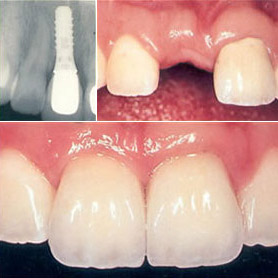

Dental Implants in El Paso
Would you like to look younger, speak more clearly & enjoy a wider selection of foods?
Then, dental implants may be ideal for you. The nearly 500,000 implant procedures performed each year speak to their effectiveness.
If you're missing one tooth, several teeth, or are wearing old dentures that don't fit quite right anymore, it's time you upgraded to dental implants. Implants are revolutionary in the world of dentistry. Here's why: restorations with dental implants are more closely secured, just like the roots of teeth. That means you gain enhancing chewing function and increased longevity. You can even prevent receding jawbone with dental implants, eliminating the aged look. Today, implants and permanent restorations can be placed in our Picasso Smiles dental office in just a few visits, a single day, even one hour! Talk to Dr. Shams or Dr. Shayesteh to learn which options are best for you.
The advantages of implants include:
- Most similar to natural teeth in look and feel
- Can be placed without altering or grinding down nearby teeth
- May prevent sunken facial appearance caused by tooth loss

Those that are not ideal candidates for dental implants are patients with not enough bone structure, who smoke, are insulin-dependent diabetics, drink excessive alcohol, or have healing problems.
Implant key points:
- The implant process is usually done with local anesthesia.
- The process can take up to nine months to complete.
- Healing can take up to six months.
- The success rate of dental implant are between 85-95 percent.
Proper oral hygiene is necessary for maintenance, and poor hygiene is big reason why dental implants fail. Brushing around the fixtures twice daily is essential. Additional cleanings, up to four times are year, may be necessary. We implement a Soft Tissue Management (STM) Program for all patients that go through an implant procedure.